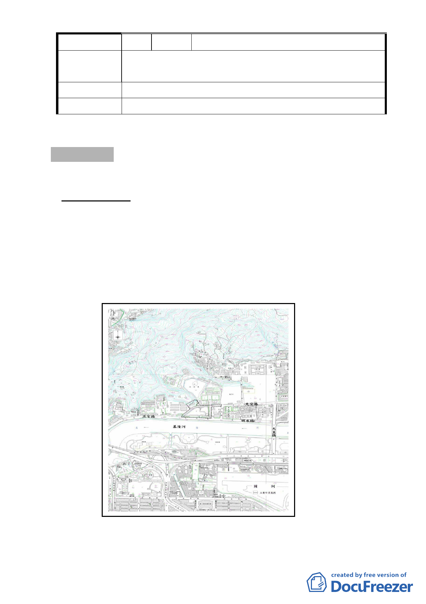

編 號 3 陳情人 林德勳
土地標示：松山區美仁段一小段 800 地號（南京東路四段 53 巷 7 弄 5 號 1 樓）
陳情理由
不同意。
建 議 辦 法 私人產權，只有本人有處理權。
委 員 會 決 議 同編號 1。
審議事項 四
案名：變更臺北市經國七海文化園區暨週邊地區主要計畫案
案情概要說明：
一、計畫位置與現況：
本計畫案位於臺北市中山區劍潭里內，位處大直基隆河北岸、北安
路北側，東臨海軍司令部、西鄰國家安全局、北倚劍潭山、南接北安路
及基隆河，範圍包括經國七海文化園區等本市市定古蹟42 筆土地（現況
為風景區、行政區）及國防部海軍司令部大直營區入口T 字型道路等週
邊地區15 筆土地（現況為行政區、道路用地），面積約4.79 公頃。
圖：計畫位置示意圖
- 11 -